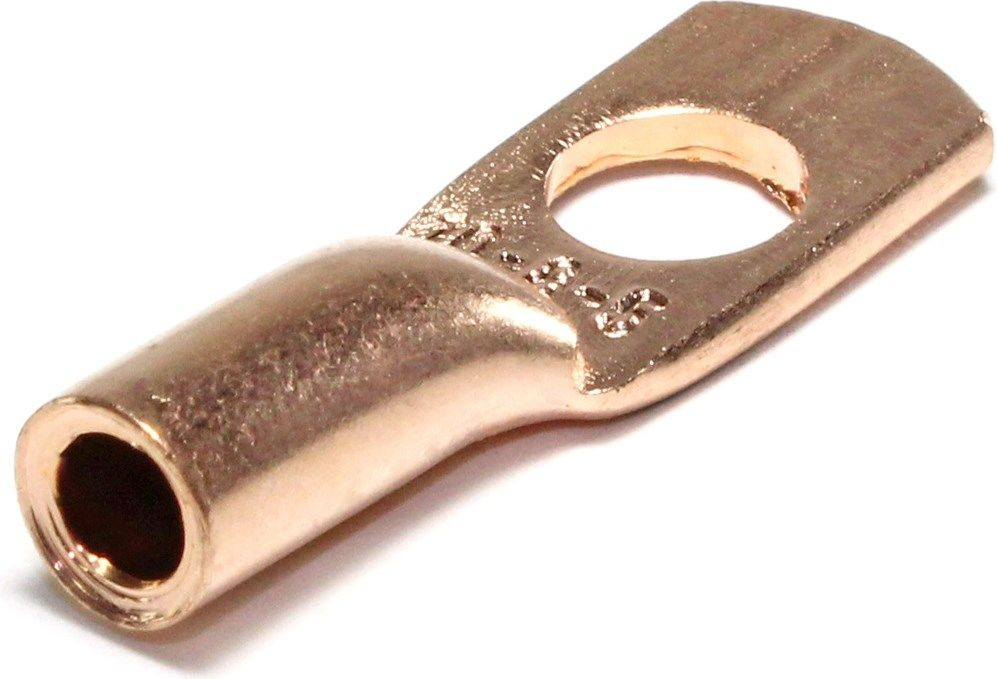
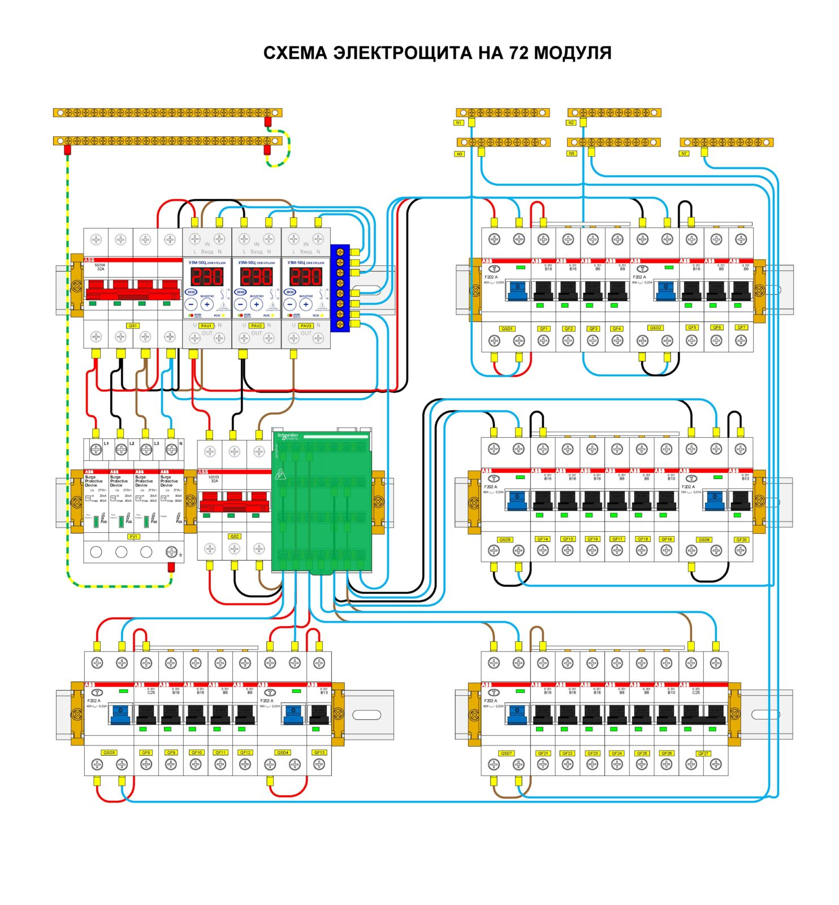

Установка модульного оборудования от Schneider Electric
- Главная
- Правила установки
Золотые правила установки модульного оборудования от Schneider Electric
ХХ век без ложной скромности можно назвать веком технологического прорыва во всех областях и сферах деятельности человека. И если задать себе вопрос: что стало причиной такого небывалого прогресса? Что за энергия, которая так стремительно вошла в наше темное бытие? Энергия, которая осветила наше серое существование, и позволила совершить грандиозный скачок в эволюции нашей жизнедеятельности? Электричество!
Электричество стало использоваться как альтернатива газовому освещению домов и улиц городов в конце ХIХ века. А уже к середине ХХ века это крайне необходимая и по сути незаменимая энергия. Массовое и нарастающее использование электрооборудования и электроприборов во второй половине ХХ века - как на производстве, так и в быту - ставило массу задач инженерам того времени.
Требовалось новое оборудование, новый подход, новые технологии для обеспечения человечества в его все возрастающей потребности использовать электричество. Требовалось быстрое и профессиональное обслуживание, и самое главное - требовалось обеспечить безопасность. Электричество - хоть и незаменимый, но очень опасный вид энергии, с которым уже мог столкнуться любой человек. Все это привело к созданиию определенных стандартов в электротехнике.
Одним из примеров таких разработок стала DIN-рейка. Немецкие инженеры придумали конструкцию, на которую монтируются электротехнические модули при помощи специальных фиксаторов, что позволяет быстро снять или поставить оборудование. Эта концепция получилась настолько удачной, что в 1981 году Международная электротехническая комиссия (МЭК) разработала международный стандарт, благодаря которому DIN-рейка получила широкое распространение во всем мире.
В России DIN-рейка была «легализована» в 2004 году со вступлением в силу стандарта ГОСТ Р МЭК 60715-2003. Для нашей страны официально приняты следующие типы реек: ТН15, ТH35, ТН75, С20, С30, С40, С50, G32. Первые одна-две буквы показывают форму профиля, причем эта форма как раз соответствует форме буквы, TH обозначает профиль «омега». Цифры после букв показывают округленное значение ширины передней части рейки, выраженное в миллиметрах. Наибольшее распространение получила рейка ТН35 с шириной передней части 35,3 мм, далее мы будем вести повествование на ее примере.
Применение модульного оборудования, вроде бы, упрощает работу электрика. Но, чтобы такой подход действительно давал выгоду, следует соблюдать следующие 10 правил.
Правило 1. Обязательно составьте подробную электрическую схему собираемого щита
Даже если вы всего лишь решаете вопросы электропитания в малогабаритной квартире, все равно изначально нужно составить схему щита, включающую в себя информацию обо всех используемых модулях, максимальных токах и сечениях проводов. Помните, что выбор места расположения щита учета, а также возможность объединения распределительного щита и щита учета в едином устройстве поставщика электроэнергии должны быть согласованы с вашим поставщиком электроэнергии.
Правило 2. Заранее определите максимальное количество модулей в щите
Округленное до большего целого значение ширины модульного оборудования, выраженное в миллиметрах, как правило, кратно 9. Но модули шириной 9 мм очень редко когда используются на практике. Поэтому в качестве своеобразной «единицы измерения» щитка принят типичный модуль однополюсного защитного автомата, ширина которого округленно составляет 18 мм (в реальности она чуть меньше). Вместимость щитков измеряют в таких модулях. Как правило, на каждый полюс автоматического выключателя приходится 18 мм на рейке.
Двухполюсный автоматический выключатель, АВДТ (автоматический выключатель дифференциального тока «диференциальный автомат») или ВД (выключатель дифференциальный УЗО — «устройство защитного отключения») для однофазной сети, как правило, занимают на рейке в два раза больше места — 36 мм. Трехполюсный ВД занимает 3x18 мм = 54 мм, и т. д. Например, если заявлено, что щиток рассчитан на 12 модулей, то в него поместится 12 однополюсных автоматических выключателей или только 3 четырехполюсных автоматических выключателя.
Для блоков питания, беспроводных модулей управления, электрических счетчиков и т. п. оборудования повышенной сложности конструкции, нужно пользоваться следующим методом. Берем ширину устройства, делим ее на 18 мм и округляем до большего целого. Получаем ширину, занимаемую на рейке, выраженную в «условных» модулях.
Рекомендуется выбирать распределительный щит с вместимостью примерно на 15 - 20% больше требуемой, чтобы при необходимости можно было осуществить модернизацию.
Убедитесь, что выбранная вами модель щита подходит по напряжению и максимальным токам, протекающим через защитный автомат на входе. Также щит должен иметь уровень защищенности от пыли и воды в соответствии с местом расположения (для улицы рекомендуется IP65).С тех сторон, где вы планируете подводить проводники, должны быть заделы под отверстия. Для щитов IP65 ввод проводником должен выполняться через герметичные кабельные вводы. Идеальный вариант (особенно для встраиваемых в стену щитов) — наличие специальной вводной камеры с отдельной крышкой.
Дифференциальные автоматические выключатели Easy9 от Schneider Electric — бюджетный вариант модульной коммутационной аппаратуры для установки на DIN-рейку
Pragma от Schneider Electric — серия пластиковых корпусов щитов на 13, 18 и 24 модуля для предприятий сферы услуг и жилых помещений высокого класса
Правило 3. Размещайте модули в щите упорядочено
На DIN-рейке модули можно располагать в произвольном порядке, но лучше использовать определенные сложившиеся правила, которые, хотя не закреплены напрямую в стандартах, тем не менее, приняты большинством электромонтажников (далее мы увидим, что взялись они не на пустом месте). Благодаря этому другому электрику будет проще работать с результатами вашего труда, да и вы сами, выработав определенные правила, сможете проще переходить от одного проекта к другому. В том случае, если модули соединены последовательно, они располагаются в последовательности слева-направо и снизу-вверх. Например, вводной автоматический выключатель, согласно этому правилу, всегда должен находиться на левом крае DIN-рейки, а, если в щите несколько DIN-реек — в левом верхнем углу. ВД, обслуживающие группы розеток, каждая из которых имеет свой защитный автомат, размещаются всегда левее (или выше) указанных автоматов. Если потребители группируются по типу устройств, сначала идут модули, к которым подключено освещение, потом те, к которым подключены универсальные розетки, а далее — устройства, требующие специальных мер защиты вроде нагревательного котла или стиральной машины.
Acti9 iPC — розетки для распределительных щитов
Для модулей, у которых направление подключения не играет роли, принимают, что входом является верхняя группа клемм, а выходом — нижняя. Это требование связано с тем, что у модулей верхняя группа клемм обычно соединена с неподвижными контактами. Согласно ПУЭ (правилам устройства электроустановок), издание 7, пункт 3.1.6, питающие проводники должны, как правило, подключаться к неподвижным контактам. Собственно, отсюда также и идет уже упоминавшееся правило размещение модулей в порядке сверху вниз в щитах с несколькими рейками.
Правило 4. Визуально выделяйте группы модулей
Для предотвращения сдвига модулей по рейке используются разделители (иначе именуемые стопорами) в начале и конце, чтобы предотвратить такой сдвиг. Такие разделители могут устанавливаться не только по краям рейки, но и между модулями, создавая между ними промежутки. Это позволяет использовать разделители для визуального выделения групп модулей.
Правило 5. Избегайте путаницы в межсоединениях
Специалисты-практики считают, что внутренние межсоединения в щитке лучше выполнять одножильным проводом. Благодаря дому, что одножильный провод «держит форму», разбираться в монтаже гораздо проще.
При большом количестве модулей (порядка нескольких десятков) разводить межсоединения жестким одножильным проводом неудобно, поэтому применяют гибкий многожильный провод. Для надежности контакта концы провода опрессовываются специальными колпачками. Избежать путаницы при использовании гибких многожильных проводов помогут кабельные стяжки. Особенно удобны многоразовые стяжки Schneider Electric Rapstrap. В том случае, если устанавливаются большие группы защитных автоматов, для межсоединений рекомендуется использовать специальные гребенки.
Правило 6. Снимайте изоляцию только стриппером
Модульное оборудование требует высокой точности при снятии изоляции с концов провода. Также недопустимо наличие повреждений на проводе в месте, где снята изоляция. Поэтому возможностей обычного ножа электрика при работе с модульным оборудованием недостаточно.
Мы рекомендуем использовать специальное приспособление — так называемый стриппер. Он снимает изоляцию точно на заданной длине, не повреждая жилу. В настоящее время стрипперы есть в ассортименте многих производителей электроинструментов.
Правило 7. Для затягивания контактов используйте динамометрическую отвертку
Для большей надежности и меньшего электрического сопротивления нужно посильнее затягивать контакты в модулях. Модули малоизвестных производителей допускают крутящий момент 1 Нм; модули от большинства ведущих брендов — 2 Нм; некоторые модули Schneider Electric на ток 32А и выше — до 3,5 Нм. Но слишком большое усилие может привести к поломке модуля, почему неопытные электромонтажники боятся слишком сильно затягивать контакты, снижая тем самым надежность соединения.
Для того, чтобы обеспечить необходимую силу затягивания, не сломав при этом модуль, используйте динамометрическую отвертку. При превышении заданного значения крутящего момента отвертка начинает свободно прокручиваться. В продаже есть модели динамометрических отверток, разработанные специально для электриков, которые позволяют вести работы под напряжением.
Правило 8. Будьте внимательны при подключении двух проводников в одну клемму
Действующие правила не допускают для фазовых проводов ввод более двух проводников в одну винтовую клемму модуля. Но даже при выполнении правил контакт при двух проводниках в одной клемме может быть ненадежен. Для повышения надежности рекомендуется отпрессовать концы обоих проводов специальной гильзой и уже в таком виде вводить их в клемму. Если же это сделать сложно, рекомендуется вводить в одну клемму только провода с одинаковым диаметром жилы. Для «нулевых» проводов и проводов заземления к одной клемме в щитке допускается, без наличия специального обоснования, подключение только одного провода.
Правило 9. Используйте маркировку кабелей и модулей
Даже в самом простом проекте не пренебрегайте маркировкой как кабелей, так и модулей. Не лишним будет маркировка и межсоединительных проводов внутри щита. На модулях должны быть нанесены надписи, однозначно описывающие потребителей, которые к ним подключены. Если на модулях нет места для надписей, модули нумеруются и составляется таблица соответствия номеров и предназначения модулей. Эти требования записаны в ГОСТ и Правилах технической эксплуатации электроустановок потребителей.
Цветовая маркировка нулевого и фазных проводов, а также провода защитного заземления внутри щита должна соответствовать ГОСТ Р50462-92. Например, при однофазной системе голубым цветом обозначают нулевой провод, сочетанием желтого и зеленого — провод заземления. В том случае, если ГОСТ допускает вариативность цветовой маркировки провода (например, для фазного провода в однофазной системе допускаются белый, коричневый, а в ряде случаев и некоторые другие цвета), маркировка в щите должна быть единообразной — должен использоваться только один из допустимых цветов. Действующие ПУЭ допускают цветовую маркировку провода только на концах, но мы настоятельно рекомендуем использовать провода в цветной изоляции, благо, в продаже сейчас есть установочные провода всех стандартных цветов.
Правило 10. После окончания сборки щита сохраните его схему
Лучший вариант — приклеить схему на дверцу щита, если там есть место. В любом случае, схема должна находиться в доступном месте, так как без нее зачастую сложно ликвидировать последствия аварии в щите.
